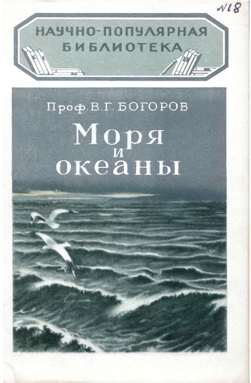
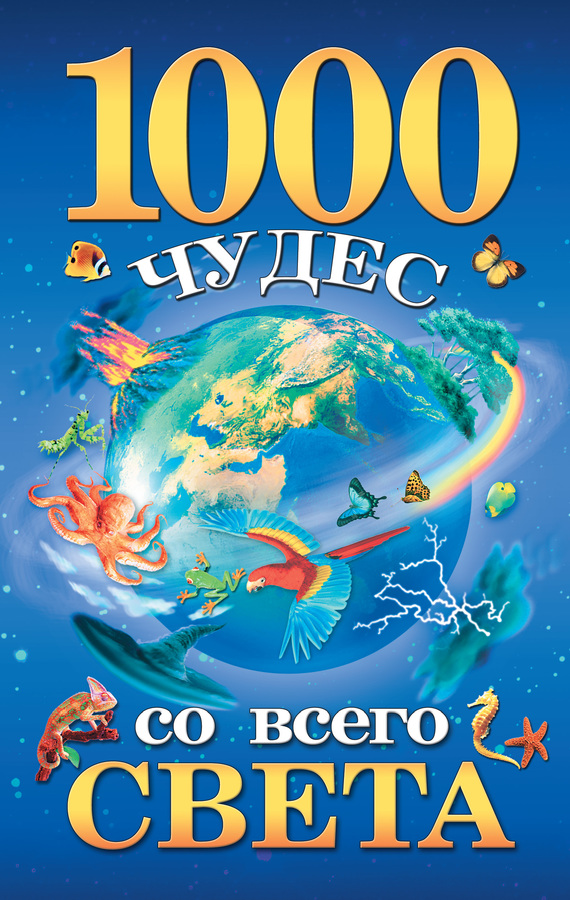

Физика морей и океанов. Стихия воды .


По материалам книги " Моря и океаны "" Богорова В.Г. "
Также по материалам книги " 1000 чудес со всего света "
" Елена Николаевна Гурнакова. "
А также из других источников Интернет
Уважаемый Читатель - после ознакомления с Книгами
рекомендую Вам заказать их бумажные издания.
Широко расстилается море. Безбрежна его волнистая поверхность. Кто хоть один раз в жизни видел море — никогда не забудет его. Первое, что поражает человека при виде моря, это — вечное движение. Всё время плещется морская волна у берега, а морские течения несут свои воды на многие тысячи километров.
С давних пор человек связан с морем. Рассматривая древнейшие рисунки в пещерах, старинные вазы и барельефы на стенах, можно видеть на них изображения мореплавателей, морских промыслов или морских войн.
С морем связаны легенды и песни различных народов. Фантазия человека с давних времён населяла море необыкновенными чудовищами, огнедышащими драконами, пожирающими людей, гигантскими спрутами, опрокидывающими корабли, и другими необыкновенными животными. Было время, когда люди даже верили, что есть особый «морской бог», управляющий «морским царством». У древних греков он назывался «Посейдон», а у римлян — «Нептун».
Вода считается основой биологической жизни и составной частью всех живых существ. Шесть материков омываются четырьмя океанами; великие и малые реки служат артериями, питающими жизнь на суше; а озера могут быть пресными, солеными, горячими, контрастными, дегтярными, кислотными. Одни моря порождают богатую растительную и животную жизнь, другие — совершенно мертвы. Вода может быть спокойной и величественной, может быть бушующей и разрушительной, может застывать в виде гигантских плавучих айсбергов или загадочно падать с небес танцующими ажурными снежинками. Мятежный водяной поток может срываться вниз с головокружительной высоты скал, образуя красивейшие водопады, над которыми в мириадах мельчайших брызг сияют разноцветные радуги.
Книги расскажут о некоторых физических особенностях морей и океанов и стихиях воды ...